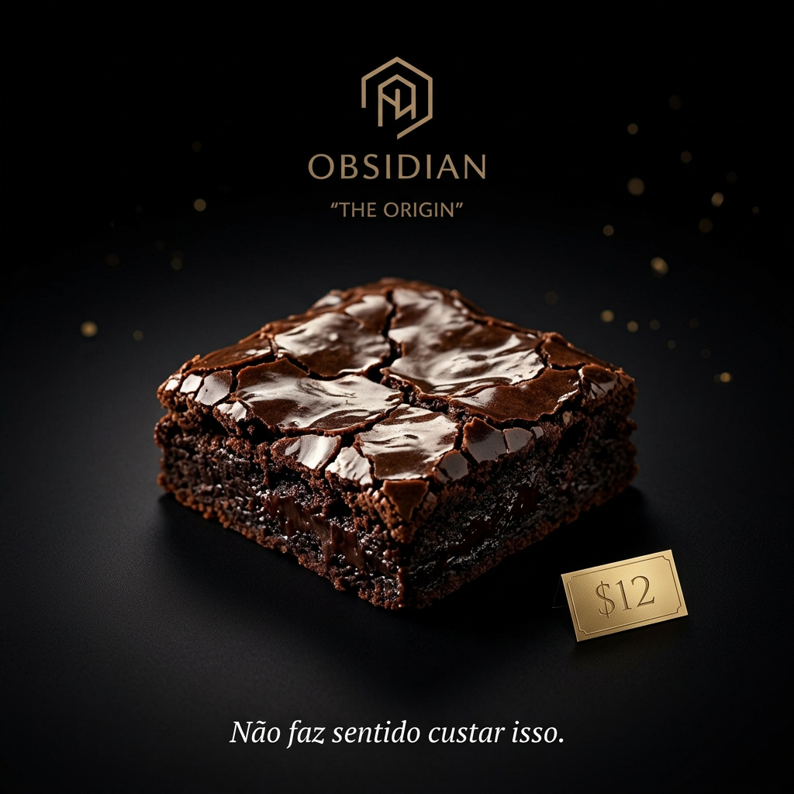

Resolvo desde o computador travado até o sistema e a identidade visual que seu negócio precisa.
Atendo pessoas físicas e pequenos negócios em três frentes: manutenção técnica, desenvolvimento de software sob medida e criação de conteúdo visual e sonoro com inteligência artificial. Engenheiro de software formado, com MBA em Engenharia de Software pela USP/Esalq.
O que eu resolvo
Quatro frentes de atendimento, do problema do dia a dia ao projeto que precisa nascer bem feito.
Suporte técnico
Pra quando o computador trava, fica lento ou precisa de uma manutenção que não pode esperar fila de loja.
- Formatação e reinstalação do sistema
- Remoção de vírus e malware
- Otimização de computador lento
- Instalação e configuração de drivers (vídeo, áudio, rede, periféricos)
- Upgrade de memória (RAM) e troca por SSD
- Configuração de rede, impressora e software
- Backup de arquivos antes de qualquer manutenção
Desenvolvimento de software
Pra quando o negócio precisa de presença online de verdade ou de um sistema próprio, não de um template genérico.
- Sites institucionais e landing pages
- Lojas virtuais com integração de pagamento (Mercado Pago, Stripe)
- Sistemas web sob medida, com backend e banco de dados
- Automações que economizam tempo do seu time
- Integração com APIs de terceiros e planilhas
- Hospedagem e manutenção contínua, se precisar
- Aplicativos mobile (React Native)
Criação com IA
Pra quando você precisa de algo visual ou sonoro rápido e customizável, sem o prazo de um estúdio tradicional, com curadoria de quem entende de música e de design de interface.
- Identidade visual e branding (logo, paleta, tipografia)
- Peças para redes sociais (posts, capas, banners)
- Música e jingles compostos, arranjados e mixados com critério de músico
- Roteiro e copy de apoio à marca
- Refinamento rápido com base no seu feedback
Manutenção de instrumentos
Sou músico e cuido do meu próprio instrumento no dia a dia. Não tenho uma bancada de luthieria tradicional, mas resolvo bem os cuidados básicos que a maioria dos músicos precisa com frequência.
- Higienização e limpeza geral do instrumento
- Troca de cordas (violão, guitarra ou baixo)
- Regulagem básica de altura das cordas (ação)
- Diagnóstico rápido de problemas simples (traste alto, cordas velhas, captação com ruído)
Como funciona
Sem burocracia: você me chama, alinhamos o essencial e eu executo.
Você me chama
Conta o que precisa pelo WhatsApp ou e-mail, com o máximo de detalhe possível.
Alinhamos escopo e valor
Antes de começar, ficamos combinados sobre prazo, entrega e preço.
Eu executo
Com pontos de checagem no meio do caminho, principalmente em projetos maiores.
Entrega e ajuste
Você recebe o resultado com um período de ajuste incluso, sem custo extra.
Valores de referência
Preços de entrada para os casos mais comuns, organizados por tipo de serviço. Ponto de partida para a conversa, com faixas maiores para quando o escopo cresce. Projetos maiores são sempre orçados sob consulta.
Suporte técnico
Atendimento presencial ou remoto| Formatação básica do sistemaSem backup incluso | R$ 80 |
| Formatação com backup completo dos arquivosAntes de apagar o disco | R$ 100 |
| Instalação limpa do WindowsCom licença própria do cliente | R$ 120 |
| Instalação do Windows + pacote OfficeAtivação inclusa, se a licença for fornecida | R$ 140 |
| Remoção de vírus e malwareDiagnóstico incluso | R$ 70 |
| Limpeza e otimização de sistema lentoSem reinstalar o sistema | R$ 90 |
| Remoção de vírus + limpeza completaAs duas manutenções juntas | R$ 110 |
| Upgrade de SSD ou memória RAMMão de obra, sem o valor da peça | R$ 60 a 100 |
| Configuração de rede, impressora ou softwarePor visita ou sessão remota | R$ 60 a 90 |
| Instalação e configuração de driversPlaca de vídeo, áudio, rede e periféricos | R$ 50 a 80 |
| Configuração de interface de áudio para gravaçãoPlaca de som externa, monitoramento e drivers ASIO | R$ 70 a 100 |
Desenvolvimento de software
Valores variam com escopo e integrações| Landing page de uma páginaDesign responsivo e formulário de contato | R$ 800 a 1.200 |
| Site institucionalMúltiplas páginas, painel de conteúdo opcional | R$ 1.500 a 2.500 |
| Loja virtual com pagamento integradoMercado Pago, Stripe ou similar, com catálogo de produtos | a partir de R$ 3.500 |
| Sistema web sob medidaBackend, banco de dados e automações próprias | Sob consulta |
| Hospedagem e manutenção mensalAtualizações, backup e suporte contínuo | a partir de R$ 150/mês |
Criação com IA
Com curadoria de músico e de quem já projeta interface| Peça avulsa para redes sociaisPost, capa ou banner único | R$ 40 a 80 |
| Identidade visual básicaLogo e paleta de cores | R$ 150 a 300 |
| Identidade visual completaLogo, paleta, tipografia e aplicações, como o case OBSIDIAN abaixo | R$ 400 a 900 |
| Jingle básicoAté 30 segundos, uso simples | R$ 80 a 150 |
| Música customizada completaLetra, arranjo e mixagem, com revisões | R$ 250 a 600 |
Manutenção de instrumentos
Cuidados básicos, sem bancada de luthieria tradicional| Higienização e limpeza geralCorpo, captadores e hardware | R$ 40 a 60 |
| Troca de cordasViolão, guitarra ou baixo, cordas não inclusas | R$ 30 a 50 |
| Regulagem básica de altura das cordasAjuste de ação | R$ 50 a 80 |
| Pacote troca de cordas + regulagemAs duas manutenções juntas | R$ 70 a 110 |
O que eu já entreguei
Uma amostra do tipo de trabalho que costumo fazer, do profissional ao pessoal.
NAMMAN
App web publicado em produção, rodando inteiramente no navegador. Sincroniza perfis de amplificador direto para o computador do usuário, com login seguro sem precisar de um servidor por trás.
Ver no GitHub ↗Análise de risco cardiovascular por imagem
Pipeline de visão computacional que analisa fotos de retina para estimar risco cardiovascular automaticamente. Nota 9/10 no trabalho de conclusão.
Ver no GitHub ↗Sistemas de dados e geoprocessamento
Desde 2021, desenvolvo dashboards, automações e sistemas de dados para grandes empresas de saneamento e energia no Brasil, na Bizpoke Soluções em Software.
Detalhes sob consulta
assets/obsidian-branding.jpgOBSIDIAN, The Origin
Identidade visual completa criada com IA para uma marca fictícia de brownies premium: naming, logotipo, paleta preto e dourado, tipografia e copy de posicionamento.
"Não faz sentido custar isso."
Sobre mim
Sou João Vitor Bermal Santaniello, engenheiro de software desde 2021, com MBA em Engenharia de Software pela USP/Esalq. Trabalho com Python, TypeScript, React e sistemas de dados no dia a dia.
Também sou músico e tenho vivência em design de interface, incluindo o redesenho do visual de um dashboard corporativo para uma grande distribuidora de energia, feito no Figma. Isso muda o resultado das criações com IA: música pensada com ouvido de quem toca e identidade visual com o mesmo cuidado que aplico em produtos digitais reais, não apenas um prompt solto. Não substituo um estúdio ou uma agência de design dedicados, mas entrego um padrão de qualidade acima do genérico, com a agilidade que um processo tradicional não tem.
Atendo pessoas físicas e pequenos negócios que precisam de alguém de confiança: do problema técnico do dia a dia ao projeto que precisa nascer bem feito.
Vamos conversar sobre o que você precisa?
Me chama e conta o que está precisando. Respondo rápido e sem enrolação.